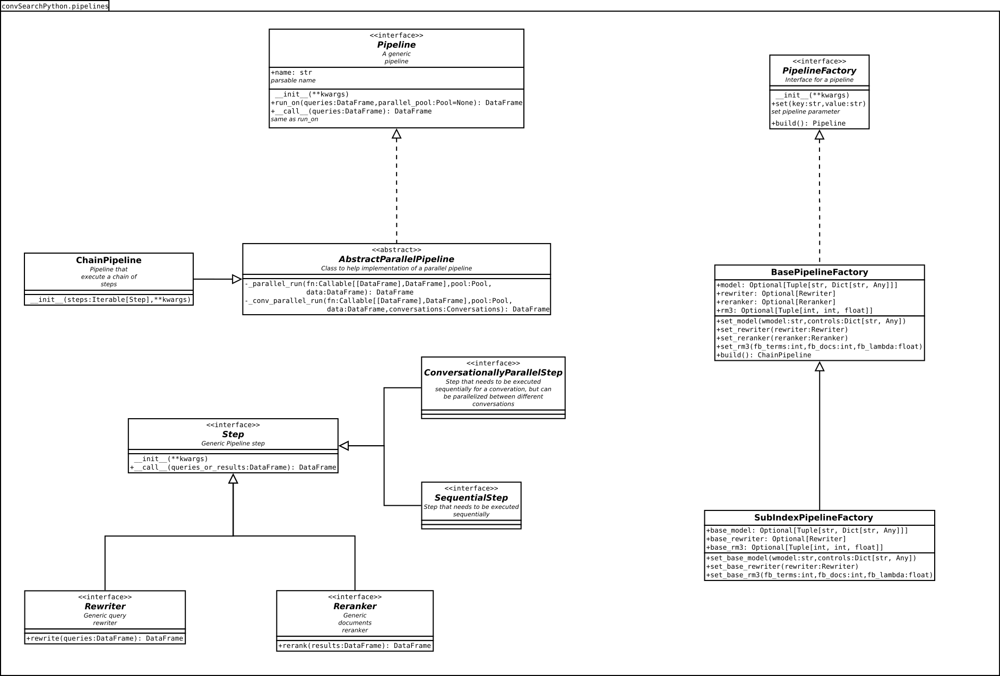

Module convSearchPython.pipelines
Module for Pipelines that provides a conversational search method
UML Scheme of provided pipelines: 
Expand source code
"""
Module for Pipelines that provides a conversational search method
UML Scheme of provided pipelines:

"""
import logging
import math
import random
import string
from abc import abstractmethod, ABC
from enum import Enum, auto
from multiprocessing.pool import Pool
from typing import Optional, NamedTuple, Any, Dict, Callable, Iterable, List
import pandas as pd
from numpy import array_split
from convSearchPython.basics import conf, pyterrier as pt
__pdoc__ = {
'Pipeline.__call__': True,
'AbstractParallelPipeline._parallel_run': True,
'AbstractParallelPipeline._conv_parallel_run': True,
'Step.__call__': True,
}
from convSearchPython.dataset import Conversations
from convSearchPython.utils.data_utils import queries_conversation_splitter
_INDEX_CACHE = {}
class IndexConf(NamedTuple):
"""
Utility class for loading indexes configured in config.ini
Usage:
```
index_conf = Index.load_index('index_name')
index = index_conf.index # this is a pyterrier index
props = index_conf.properties # this is a dict of index properties
br = pt.BatchRetrieve(index,
wmodel="DirichletLM",
properties=props)
```
"""
#: pyterrier index
index: Any
#: dict of properties for the index (or None if default apply)
properties: Optional[Dict[str, Any]]
@staticmethod
def load_index(name: str) -> 'IndexConf':
"""
Load a pyterrier index (and relative properties) from config.
Raises ValueError if no index is found with provided name.
Args:
name: the name of the wanted index inside conf.ini
Returns:
An IndexConf objects
"""
if name in _INDEX_CACHE:
return _INDEX_CACHE[name]
logging.getLogger('IndexConf').info('loading index "%s"', name)
prefix = f'{name}.'
indexes = conf['INDEXES']
path = indexes.get(prefix + 'path')
if path is None:
raise ValueError(f'index "{name}" not found')
properties = {}
for key in indexes.keys():
if key.startswith(prefix) and (not key == f'{name}.path'):
prop_key = key[len(prefix):]
properties[prop_key] = indexes[key]
if len(properties) == 0:
properties = None
index = IndexConf(pt.IndexFactory.of(path), properties)
_INDEX_CACHE[name] = index
return index
@staticmethod
def add_index(index, properties: Dict[str, Any] = None, name: str = None) -> str:
"""
Add the provided index to cache
Raises:
KeyError: if name is provided and an index with that name already exists
RuntimeError: if name wasn't provided and the method didn't find a suitable name
in 100 iterations (safeguard against infinite loop)
Args:
index: pyterrier index
properties: optional dict of properties
name: optional name for the index
Returns:
the name of the added index
"""
if name is None:
characters = string.ascii_letters + string.digits
for i in range(100):
rdn_name = ''.join(random.choices(characters, k=10))
if (rdn_name not in _INDEX_CACHE) and (rdn_name not in conf['INDEXES']):
name = rdn_name
break
if name is None:
raise RuntimeError('cannot find suitable name in 100 iteration (safeguard against infinite loop)')
else:
if (name in _INDEX_CACHE) or (name in conf['INDEXES']):
raise KeyError(f'an in dex named "{name}" already exists')
_INDEX_CACHE[name] = IndexConf(index, properties)
return name
@staticmethod
def remove_index(name: str) -> bool:
"""
Remove an index from cache.
If the index wasn't in cache False is returned, else True is returned.
Args:
name: name of the index to remove
Returns:
True if the index was in cache, False otherwise
"""
if name in _INDEX_CACHE:
_INDEX_CACHE.pop(name)
return True
return False
class Pipeline(ABC):
"""
Interface for a Pipeline.
A pipeline represent a flow of execution comprised of
various steps, that takes in input a DataFrame of queries
and give in output a DataFrame of results.
Pipelines will be instantiated with a dictionary of parameters comprised of:
- parameters specified in the search configuration file
- common parameters that are **always** passed and that a pipeline
can decide to use, if it needs.
For this reason a pipeline is **required** to have a `**kwargs` arguments
inside its signature so unused arguments won't cause an error.
For more information on reserved arguments names or pipeline instantiation in general,
look at `convSearchPython.search`.
## Implementations:
Every implementation that subclass this object needs to:
- implement a `name` field (generally using a property) that return an easy-to-parse
name that represent the entire pipeline
- implement the `run_on` method, that takes the queries (and optionally a parallel pool),
process them with the pipeline and return the results conforming with pyterrier data model
- <ins>Not</ins> override the `__call__` method, that execute run_on internally, by default.
## Pipeline-like objects:
The default way to execute a pipeline is using it as a callable object.
That means that every object that conform to the constructor and the `__call__` method
of this object can effectively be used as a pipeline.
"""
def __init__(self, **kwargs):
"""
Args:
**kwargs: extra unused parameters
"""
@property
@abstractmethod
def name(self):
"""
An easy-to-parse name for the pipeline that represents
the various steps and their configuration
Generally this should be implemented using a property
"""
pass
@abstractmethod
def run_on(self, queries: pd.DataFrame, parallel_pool: Optional[Pool] = None):
"""
Run the pipeline on a DataFrame of query with, optionally, a parallel pool.
It is responsibility of the implementing class to decide how to use the parallel pool,
and check if the needed step are parallelizable (and how).
Args:
queries: queries DataFrame
parallel_pool: multiprocessing Pool
Returns:
A DataFrame of results conforming to pyterrier data model
"""
pass
def __call__(self, queries: pd.DataFrame, parallel_pool: Optional[Pool] = None) -> pd.DataFrame:
"""Same as `run_on`"""
return self.run_on(queries, parallel_pool)
class AbstractParallelPipeline(Pipeline, ABC):
"""
Abstract class to help to implement a parallel pipeline.
It provides two private methods, `_parallel_run` and `conv_parallel_run`
that can be used by subclasses to parallelize a step of the pipeline.
"""
@staticmethod
def _parallel_run(step: Callable[[pd.DataFrame], pd.DataFrame],
pool: Pool,
data: pd.DataFrame,
split_n: int = None) -> pd.DataFrame:
"""
Run a pipeline step on a parallel pool.
Note: this method do not consider the existence of conversations
when dividing the data.
Args:
step: the callable step, must accept a DataFrame and return a DataFrame
pool: the multiprocessing parallel pool
data: the data (queries or results) to split
split_n: (optional) if provided, number of (almost) equals parts to divide data in
Returns:
The resulting DataFrame
"""
if split_n is None:
# try to find the level of parallelism
n = getattr(pool, '_processes', None)
if (n is None) or (not isinstance(n, int)) or (n <= 0):
split_n = math.floor(len(data) / 20)
else:
chunk_size = len(data) / (n * 2)
if chunk_size < 10:
chunk_size = 10
elif chunk_size > 50:
chunk_size = 50
split_n = math.floor(len(data) / chunk_size)
parts_iterable = pool.imap(step, array_split(data, split_n))
return pd.concat(parts_iterable)
@staticmethod
def _conv_parallel_run(step: Callable[[pd.DataFrame], pd.DataFrame],
pool: Pool,
data: pd.DataFrame,
conversations: Conversations) -> pd.DataFrame:
"""
Run a pipeline step on a parallel pool dividing data by conversation.
Args:
step: the callable step, must accept a DataFrame and return a DataFrame
pool: the multiprocessing parallel pool
data: the data (queries or results) to split
conversations: conversations structure
Returns:
The resulting DataFrame
"""
conv_iterator = queries_conversation_splitter(data, conversations)
parts_iterator = pool.imap(step, conv_iterator)
return pd.concat(parts_iterator)
class StepType(Enum):
"""
Enum that define the type of a Step instance.
In particular, it provides insight on the parallelizability
of a Step.
"""
#: Step that can be fully parallelized regardless of conversations
FULLY_PARALLEL = auto()
#: Step that must be executed sequentially on every conversation
#: but can be parallelized between different ones
CONVERSATIONALLY_PARALLEL = auto()
#: Step that must be executed sequentially on the main process
SEQUENTIAL = auto()
class Step(ABC):
"""
Class that represent a generic pipeline step
Implementation may want to override:
- `name` to provide a representative name for the step and its parameters
- `cleanup()` to clean cached objects after the execution
"""
def __init__(self, **kwargs):
"""
Args:
**kwargs: extra unused arguments
"""
pass
@property
def name(self) -> str:
"""
Representative name of the Step
"""
return self.__class__.__name__
@property
@abstractmethod
def type(self) -> StepType:
"""
Type of the Step
"""
pass
def cleanup(self):
"""
Clean eventual cached objects after the step execution.
By default, is a no-op but can be overridden by implementations.
"""
pass
@abstractmethod
def __call__(self, queries_or_results: pd.DataFrame) -> pd.DataFrame:
"""
Apply this step on a DataFrame
Args:
queries_or_results: input DataFrame on witch apply this step
Returns:
The resulting DataFrame
"""
pass
class Rewriter(Step, ABC):
"""
A Rewriter is a special case of pipeline step that rewrite
the query formulations passed in input.
Subclasses must implement the `rewrite` method.
This class override the `__call__` method, so it uses `rewrite` internally.
"""
@abstractmethod
def rewrite(self, queries: pd.DataFrame) -> pd.DataFrame:
"""
Rewrite input queries.
The result must conform to the pyterrier data model.
So the old "query" column must be renamed "query_n" where
n is the number of the formulation (starting with 0).
Example: if the input already contains a "query_0" column,
the "query" column must be renamed "query_1" and a new
"query" column must be added with rewritten queries.
Args:
queries: input queries DataFrame
Returns:
DataFrame with rewritten queries
"""
pass
def __call__(self, queries: pd.DataFrame) -> pd.DataFrame:
return self.rewrite(queries)
class Reranker(Step, ABC):
"""
A Rewriter is a special case of pipeline step that rerank
the documents and produce a newly ordered results DataFrame.
Subclasses must implement the `rerank` method.
This class override the `__call__` method, so it uses `rerank` internally.
"""
@abstractmethod
def rerank(self, results: pd.DataFrame) -> pd.DataFrame:
"""
Rewrite input queries.
The result must conform to the pyterrier data model.
So the content of the "score" column must be updated.
It is responsibility of the rewriter to check if multiple
conversations were passed as inputs and act according, and
to sort the resulting DataFrame before returning it.
Args:
results: input results DataFrame
Returns:
DataFrame reordered and with updated scores
"""
pass
def __call__(self, results: pd.DataFrame) -> pd.DataFrame:
return self.rerank(results)
class Model(Step):
"""
Wrapper for BatchRetrieve
Note: mu control, when wmodel is DirichletLM, is renamed to c for convenience
"""
def __init__(self, wmodel: str, controls: Dict[str, Any], index: str, metadata: List[str], **kwargs):
"""
Args:
wmodel: model name (ex. BM25)
controls: model controls
index: index name
metadata: metadata list
**kwargs: extra unused arguments
"""
super().__init__(**kwargs)
self._wmodel = wmodel
if wmodel == 'DirichletLM' and 'mu' in controls:
controls['c'] = controls.pop('mu')
self._num_results = 1000
if 'num_results' in controls:
self._num_results = controls.pop('num_results')
self._controls = controls
self._index = index
self._metadata = metadata
self._br = None
@property
def wmodel(self):
return self._wmodel
@property
def controls(self):
return self._controls.copy()
@property
def name(self) -> str:
parts = [self.wmodel]
for key, value in self._controls.items():
if key == 'num_results':
key = 'n'
parts.append(f'{key}={value}')
return '-'.join(parts)
@property
def type(self) -> StepType:
return StepType.FULLY_PARALLEL
def cleanup(self):
self._br = None
def _batch_retrieve(self):
index_conf = IndexConf.load_index(self._index)
return pt.BatchRetrieve(index_conf.index,
wmodel="DirichletLM",
controls=self._controls,
properties=index_conf.properties,
metadata=self._metadata,
num_results=self._num_results)
def __call__(self, queries: pd.DataFrame) -> pd.DataFrame:
if self._br is None:
self._br = self._batch_retrieve()
return self._br(queries)
def __getstate__(self):
return self._wmodel, self._controls, self._index, self._metadata
def __setstate__(self, state):
self._wmodel, self._controls, self._index, self._metadata = state
self._br = None
class RM3(Step):
"""
Wrapper for RM3
"""
def __init__(self, index: str, fb_terms: int = 20, fb_docs: int = 20, fb_lambda: float = 0.5, **kwargs):
"""
Args:
index: index name
fb_terms: number of terms
fb_docs: number of docs
fb_lambda: rm3 parameter
**kwargs: extra unused arguments
"""
super().__init__(**kwargs)
self._index = index
self._fb_terms = fb_terms
self._fb_docs = fb_docs
self._fb_lambda = fb_lambda
self._rm3 = None
@property
def fb_terms(self):
return self._fb_terms
@property
def fb_docs(self):
return self._fb_docs
@property
def fb_lambda(self):
return self._fb_lambda
@property
def name(self):
return f'rm3-t{self.fb_terms}-d{self.fb_docs}-l{self.fb_lambda}'
@property
def type(self) -> StepType:
return StepType.FULLY_PARALLEL
def cleanup(self):
self._rm3 = None
def _get_rm3(self):
index_conf = IndexConf.load_index(self._index)
return pt.rewrite.RM3(index_conf.index,
fb_terms=self._fb_terms,
fb_docs=self._fb_docs,
fb_lambda=self._fb_lambda)
def __call__(self, results: pd.DataFrame) -> pd.DataFrame:
if self._rm3 is None:
self._rm3 = self._get_rm3()
return self._rm3(results)
def __getstate__(self):
return self._fb_terms, self._fb_docs, self._fb_lambda, self._index
def __setstate__(self, state):
self._fb_terms, self._fb_docs, self._fb_lambda, self._index = state
self._rm3 = None
class ChainPipeline(AbstractParallelPipeline):
"""
Pipeline that combine already constructed steps.
While the main use is to combine objects that subclass `Step`,
this class will work with any Step-like object that act as
```Callable[[DataFrame], DataFrame]```.
"""
def __init__(self, steps: Iterable[Step], name: str,
conversations: Conversations, **kwargs):
"""
Args:
steps: iterable of Step or Step-like objects
name: easy-to-parse pipeline name
conversations: (reserved argument) conversations structure
**kwargs: extra unused arguments
"""
super().__init__(**kwargs)
self._name = name
self._conversations = conversations
self._steps = list(steps)
for s in steps:
if not callable(s):
raise ValueError(f'step {s} is not callable')
@property
def steps(self) -> List[Step]:
"""List of Step objects contained in this pipeline"""
return self._steps.copy()
@property
def name(self) -> str:
"""Easy-to-parse pipeline name"""
return self._name
def run_on(self, queries: pd.DataFrame, parallel_pool: Optional[Pool] = None) -> pd.DataFrame:
"""
Run the pipeline.
If a parallel pool is provided, then the steps are executed according to the following rules:
- If a step is of type `StepType.SEQUENTIAL`, then it's executed sequentially
outside the parallel pool
- If a step is of type `StepType.CONVERSATIONALLY_PARALLEL`, then it's
executed inside the parallel pool, dividing the input queries by conversation
- If neither of that applies, the step is executed inside the parallel pool
without regarding of the conversations
Args:
queries: input queries DataFrame
parallel_pool: optional parallel pool
Returns:
The resulting DataFrame
"""
data = queries
if parallel_pool is None:
for step in self._steps:
data = step(data)
else:
for step in self._steps:
type = getattr(step, 'type', StepType.FULLY_PARALLEL)
if type == StepType.SEQUENTIAL:
data = step(data)
elif type == StepType.CONVERSATIONALLY_PARALLEL:
data = self._conv_parallel_run(step, parallel_pool, data, self._conversations)
else:
data = self._parallel_run(step, parallel_pool, data)
cleanup = getattr(step, 'cleanup', None)
if callable(cleanup):
cleanup()
return data
if __name__ == '__main__':
index_conf = IndexConf.load_index('custom')
print(index_conf)Sub-modules
convSearchPython.pipelines.baselines-
Collection of baselines runs
convSearchPython.pipelines.bottom_up-
This module contains a collection of pipelines that add a bottom up reranking filter at the end of the searching …
convSearchPython.pipelines.dbpedia-
This module contains a pipeline based on Incoporating Query Context into a BERT Re-ranker
convSearchPython.pipelines.factoryconvSearchPython.pipelines.historical-
This module contains a collection of pipelines that make use of two algorithms (HQE and HAE) described in [Query and Answer Expansion from …
Classes
class IndexConf (index: Any, properties: Optional[Dict[str, Any]])-
Utility class for loading indexes configured in config.ini
Usage:
index_conf = Index.load_index('index_name') index = index_conf.index # this is a pyterrier index props = index_conf.properties # this is a dict of index properties br = pt.BatchRetrieve(index, wmodel="DirichletLM", properties=props)Expand source code
class IndexConf(NamedTuple): """ Utility class for loading indexes configured in config.ini Usage: ``` index_conf = Index.load_index('index_name') index = index_conf.index # this is a pyterrier index props = index_conf.properties # this is a dict of index properties br = pt.BatchRetrieve(index, wmodel="DirichletLM", properties=props) ``` """ #: pyterrier index index: Any #: dict of properties for the index (or None if default apply) properties: Optional[Dict[str, Any]] @staticmethod def load_index(name: str) -> 'IndexConf': """ Load a pyterrier index (and relative properties) from config. Raises ValueError if no index is found with provided name. Args: name: the name of the wanted index inside conf.ini Returns: An IndexConf objects """ if name in _INDEX_CACHE: return _INDEX_CACHE[name] logging.getLogger('IndexConf').info('loading index "%s"', name) prefix = f'{name}.' indexes = conf['INDEXES'] path = indexes.get(prefix + 'path') if path is None: raise ValueError(f'index "{name}" not found') properties = {} for key in indexes.keys(): if key.startswith(prefix) and (not key == f'{name}.path'): prop_key = key[len(prefix):] properties[prop_key] = indexes[key] if len(properties) == 0: properties = None index = IndexConf(pt.IndexFactory.of(path), properties) _INDEX_CACHE[name] = index return index @staticmethod def add_index(index, properties: Dict[str, Any] = None, name: str = None) -> str: """ Add the provided index to cache Raises: KeyError: if name is provided and an index with that name already exists RuntimeError: if name wasn't provided and the method didn't find a suitable name in 100 iterations (safeguard against infinite loop) Args: index: pyterrier index properties: optional dict of properties name: optional name for the index Returns: the name of the added index """ if name is None: characters = string.ascii_letters + string.digits for i in range(100): rdn_name = ''.join(random.choices(characters, k=10)) if (rdn_name not in _INDEX_CACHE) and (rdn_name not in conf['INDEXES']): name = rdn_name break if name is None: raise RuntimeError('cannot find suitable name in 100 iteration (safeguard against infinite loop)') else: if (name in _INDEX_CACHE) or (name in conf['INDEXES']): raise KeyError(f'an in dex named "{name}" already exists') _INDEX_CACHE[name] = IndexConf(index, properties) return name @staticmethod def remove_index(name: str) -> bool: """ Remove an index from cache. If the index wasn't in cache False is returned, else True is returned. Args: name: name of the index to remove Returns: True if the index was in cache, False otherwise """ if name in _INDEX_CACHE: _INDEX_CACHE.pop(name) return True return FalseAncestors
- builtins.tuple
Static methods
def load_index(name: str) ‑> IndexConf-
Load a pyterrier index (and relative properties) from config.
Raises ValueError if no index is found with provided name.
Args
name- the name of the wanted index inside conf.ini
Returns
An IndexConf objects
Expand source code
@staticmethod def load_index(name: str) -> 'IndexConf': """ Load a pyterrier index (and relative properties) from config. Raises ValueError if no index is found with provided name. Args: name: the name of the wanted index inside conf.ini Returns: An IndexConf objects """ if name in _INDEX_CACHE: return _INDEX_CACHE[name] logging.getLogger('IndexConf').info('loading index "%s"', name) prefix = f'{name}.' indexes = conf['INDEXES'] path = indexes.get(prefix + 'path') if path is None: raise ValueError(f'index "{name}" not found') properties = {} for key in indexes.keys(): if key.startswith(prefix) and (not key == f'{name}.path'): prop_key = key[len(prefix):] properties[prop_key] = indexes[key] if len(properties) == 0: properties = None index = IndexConf(pt.IndexFactory.of(path), properties) _INDEX_CACHE[name] = index return index def add_index(index, properties: Dict[str, Any] = None, name: str = None) ‑> str-
Add the provided index to cache
Raises
KeyError- if name is provided and an index with that name already exists
RuntimeError- if name wasn't provided and the method didn't find a suitable name
in 100 iterations (safeguard against infinite loop)
Args
index- pyterrier index
properties- optional dict of properties
name- optional name for the index
Returns
the name of the added index
Expand source code
@staticmethod def add_index(index, properties: Dict[str, Any] = None, name: str = None) -> str: """ Add the provided index to cache Raises: KeyError: if name is provided and an index with that name already exists RuntimeError: if name wasn't provided and the method didn't find a suitable name in 100 iterations (safeguard against infinite loop) Args: index: pyterrier index properties: optional dict of properties name: optional name for the index Returns: the name of the added index """ if name is None: characters = string.ascii_letters + string.digits for i in range(100): rdn_name = ''.join(random.choices(characters, k=10)) if (rdn_name not in _INDEX_CACHE) and (rdn_name not in conf['INDEXES']): name = rdn_name break if name is None: raise RuntimeError('cannot find suitable name in 100 iteration (safeguard against infinite loop)') else: if (name in _INDEX_CACHE) or (name in conf['INDEXES']): raise KeyError(f'an in dex named "{name}" already exists') _INDEX_CACHE[name] = IndexConf(index, properties) return name def remove_index(name: str) ‑> bool-
Remove an index from cache.
If the index wasn't in cache False is returned, else True is returned.
Args
name- name of the index to remove
Returns
True if the index was in cache, False otherwise
Expand source code
@staticmethod def remove_index(name: str) -> bool: """ Remove an index from cache. If the index wasn't in cache False is returned, else True is returned. Args: name: name of the index to remove Returns: True if the index was in cache, False otherwise """ if name in _INDEX_CACHE: _INDEX_CACHE.pop(name) return True return False
Instance variables
var index : Any-
pyterrier index
var properties : Optional[Dict[str, Any]]-
dict of properties for the index (or None if default apply)
class Pipeline (**kwargs)-
Interface for a Pipeline.
A pipeline represent a flow of execution comprised of various steps, that takes in input a DataFrame of queries and give in output a DataFrame of results.
Pipelines will be instantiated with a dictionary of parameters comprised of:
- parameters specified in the search configuration file
- common parameters that are always passed and that a pipeline can decide to use, if it needs.
For this reason a pipeline is required to have a
**kwargsarguments inside its signature so unused arguments won't cause an error. For more information on reserved arguments names or pipeline instantiation in general, look atconvSearchPython.search.Implementations:
Every implementation that subclass this object needs to:
- implement a
namefield (generally using a property) that return an easy-to-parse name that represent the entire pipeline - implement the
run_onmethod, that takes the queries (and optionally a parallel pool), process them with the pipeline and return the results conforming with pyterrier data model - Not override the
__call__method, that execute run_on internally, by default.
Pipeline-like objects:
The default way to execute a pipeline is using it as a callable object. That means that every object that conform to the constructor and the
__call__method of this object can effectively be used as a pipeline.Args
**kwargs- extra unused parameters
Expand source code
class Pipeline(ABC): """ Interface for a Pipeline. A pipeline represent a flow of execution comprised of various steps, that takes in input a DataFrame of queries and give in output a DataFrame of results. Pipelines will be instantiated with a dictionary of parameters comprised of: - parameters specified in the search configuration file - common parameters that are **always** passed and that a pipeline can decide to use, if it needs. For this reason a pipeline is **required** to have a `**kwargs` arguments inside its signature so unused arguments won't cause an error. For more information on reserved arguments names or pipeline instantiation in general, look at `convSearchPython.search`. ## Implementations: Every implementation that subclass this object needs to: - implement a `name` field (generally using a property) that return an easy-to-parse name that represent the entire pipeline - implement the `run_on` method, that takes the queries (and optionally a parallel pool), process them with the pipeline and return the results conforming with pyterrier data model - <ins>Not</ins> override the `__call__` method, that execute run_on internally, by default. ## Pipeline-like objects: The default way to execute a pipeline is using it as a callable object. That means that every object that conform to the constructor and the `__call__` method of this object can effectively be used as a pipeline. """ def __init__(self, **kwargs): """ Args: **kwargs: extra unused parameters """ @property @abstractmethod def name(self): """ An easy-to-parse name for the pipeline that represents the various steps and their configuration Generally this should be implemented using a property """ pass @abstractmethod def run_on(self, queries: pd.DataFrame, parallel_pool: Optional[Pool] = None): """ Run the pipeline on a DataFrame of query with, optionally, a parallel pool. It is responsibility of the implementing class to decide how to use the parallel pool, and check if the needed step are parallelizable (and how). Args: queries: queries DataFrame parallel_pool: multiprocessing Pool Returns: A DataFrame of results conforming to pyterrier data model """ pass def __call__(self, queries: pd.DataFrame, parallel_pool: Optional[Pool] = None) -> pd.DataFrame: """Same as `run_on`""" return self.run_on(queries, parallel_pool)Ancestors
- abc.ABC
Subclasses
Instance variables
var name-
An easy-to-parse name for the pipeline that represents the various steps and their configuration
Generally this should be implemented using a property
Expand source code
@property @abstractmethod def name(self): """ An easy-to-parse name for the pipeline that represents the various steps and their configuration Generally this should be implemented using a property """ pass
Methods
def run_on(self, queries: pandas.core.frame.DataFrame, parallel_pool: Optional[multiprocessing.pool.Pool] = None)-
Run the pipeline on a DataFrame of query with, optionally, a parallel pool.
It is responsibility of the implementing class to decide how to use the parallel pool, and check if the needed step are parallelizable (and how).
Args
queries- queries DataFrame
parallel_pool- multiprocessing Pool
Returns
A DataFrame of results conforming to pyterrier data model
Expand source code
@abstractmethod def run_on(self, queries: pd.DataFrame, parallel_pool: Optional[Pool] = None): """ Run the pipeline on a DataFrame of query with, optionally, a parallel pool. It is responsibility of the implementing class to decide how to use the parallel pool, and check if the needed step are parallelizable (and how). Args: queries: queries DataFrame parallel_pool: multiprocessing Pool Returns: A DataFrame of results conforming to pyterrier data model """ pass def __call__(self, queries: pandas.core.frame.DataFrame, parallel_pool: Optional[multiprocessing.pool.Pool] = None) ‑> pandas.core.frame.DataFrame-
Same as
run_onExpand source code
def __call__(self, queries: pd.DataFrame, parallel_pool: Optional[Pool] = None) -> pd.DataFrame: """Same as `run_on`""" return self.run_on(queries, parallel_pool)
class AbstractParallelPipeline (**kwargs)-
Abstract class to help to implement a parallel pipeline.
It provides two private methods,
_parallel_runandconv_parallel_runthat can be used by subclasses to parallelize a step of the pipeline.Args
**kwargs- extra unused parameters
Expand source code
class AbstractParallelPipeline(Pipeline, ABC): """ Abstract class to help to implement a parallel pipeline. It provides two private methods, `_parallel_run` and `conv_parallel_run` that can be used by subclasses to parallelize a step of the pipeline. """ @staticmethod def _parallel_run(step: Callable[[pd.DataFrame], pd.DataFrame], pool: Pool, data: pd.DataFrame, split_n: int = None) -> pd.DataFrame: """ Run a pipeline step on a parallel pool. Note: this method do not consider the existence of conversations when dividing the data. Args: step: the callable step, must accept a DataFrame and return a DataFrame pool: the multiprocessing parallel pool data: the data (queries or results) to split split_n: (optional) if provided, number of (almost) equals parts to divide data in Returns: The resulting DataFrame """ if split_n is None: # try to find the level of parallelism n = getattr(pool, '_processes', None) if (n is None) or (not isinstance(n, int)) or (n <= 0): split_n = math.floor(len(data) / 20) else: chunk_size = len(data) / (n * 2) if chunk_size < 10: chunk_size = 10 elif chunk_size > 50: chunk_size = 50 split_n = math.floor(len(data) / chunk_size) parts_iterable = pool.imap(step, array_split(data, split_n)) return pd.concat(parts_iterable) @staticmethod def _conv_parallel_run(step: Callable[[pd.DataFrame], pd.DataFrame], pool: Pool, data: pd.DataFrame, conversations: Conversations) -> pd.DataFrame: """ Run a pipeline step on a parallel pool dividing data by conversation. Args: step: the callable step, must accept a DataFrame and return a DataFrame pool: the multiprocessing parallel pool data: the data (queries or results) to split conversations: conversations structure Returns: The resulting DataFrame """ conv_iterator = queries_conversation_splitter(data, conversations) parts_iterator = pool.imap(step, conv_iterator) return pd.concat(parts_iterator)Ancestors
- Pipeline
- abc.ABC
Subclasses
Static methods
def _parallel_run(step: Callable[[pandas.core.frame.DataFrame], pandas.core.frame.DataFrame], pool: multiprocessing.pool.Pool, data: pandas.core.frame.DataFrame, split_n: int = None) ‑> pandas.core.frame.DataFrame-
Run a pipeline step on a parallel pool.
Note: this method do not consider the existence of conversations when dividing the data.
Args
step- the callable step, must accept a DataFrame and return a DataFrame
pool- the multiprocessing parallel pool
data- the data (queries or results) to split
split_n- (optional) if provided, number of (almost) equals parts to divide data in
Returns
The resulting DataFrame
Expand source code
@staticmethod def _parallel_run(step: Callable[[pd.DataFrame], pd.DataFrame], pool: Pool, data: pd.DataFrame, split_n: int = None) -> pd.DataFrame: """ Run a pipeline step on a parallel pool. Note: this method do not consider the existence of conversations when dividing the data. Args: step: the callable step, must accept a DataFrame and return a DataFrame pool: the multiprocessing parallel pool data: the data (queries or results) to split split_n: (optional) if provided, number of (almost) equals parts to divide data in Returns: The resulting DataFrame """ if split_n is None: # try to find the level of parallelism n = getattr(pool, '_processes', None) if (n is None) or (not isinstance(n, int)) or (n <= 0): split_n = math.floor(len(data) / 20) else: chunk_size = len(data) / (n * 2) if chunk_size < 10: chunk_size = 10 elif chunk_size > 50: chunk_size = 50 split_n = math.floor(len(data) / chunk_size) parts_iterable = pool.imap(step, array_split(data, split_n)) return pd.concat(parts_iterable) def _conv_parallel_run(step: Callable[[pandas.core.frame.DataFrame], pandas.core.frame.DataFrame], pool: multiprocessing.pool.Pool, data: pandas.core.frame.DataFrame, conversations: Dict[str, List[str]]) ‑> pandas.core.frame.DataFrame-
Run a pipeline step on a parallel pool dividing data by conversation.
Args
step- the callable step, must accept a DataFrame and return a DataFrame
pool- the multiprocessing parallel pool
data- the data (queries or results) to split
conversations- conversations structure
Returns
The resulting DataFrame
Expand source code
@staticmethod def _conv_parallel_run(step: Callable[[pd.DataFrame], pd.DataFrame], pool: Pool, data: pd.DataFrame, conversations: Conversations) -> pd.DataFrame: """ Run a pipeline step on a parallel pool dividing data by conversation. Args: step: the callable step, must accept a DataFrame and return a DataFrame pool: the multiprocessing parallel pool data: the data (queries or results) to split conversations: conversations structure Returns: The resulting DataFrame """ conv_iterator = queries_conversation_splitter(data, conversations) parts_iterator = pool.imap(step, conv_iterator) return pd.concat(parts_iterator)
Inherited members
class StepType (value, names=None, *, module=None, qualname=None, type=None, start=1)-
Enum that define the type of a Step instance. In particular, it provides insight on the parallelizability of a Step.
Expand source code
class StepType(Enum): """ Enum that define the type of a Step instance. In particular, it provides insight on the parallelizability of a Step. """ #: Step that can be fully parallelized regardless of conversations FULLY_PARALLEL = auto() #: Step that must be executed sequentially on every conversation #: but can be parallelized between different ones CONVERSATIONALLY_PARALLEL = auto() #: Step that must be executed sequentially on the main process SEQUENTIAL = auto()Ancestors
- enum.Enum
Class variables
var FULLY_PARALLEL-
Step that can be fully parallelized regardless of conversations
var CONVERSATIONALLY_PARALLEL-
Step that must be executed sequentially on every conversation but can be parallelized between different ones
var SEQUENTIAL-
Step that must be executed sequentially on the main process
class Step (**kwargs)-
Class that represent a generic pipeline step
Implementation may want to override:
nameto provide a representative name for the step and its parameterscleanup()to clean cached objects after the execution
Args
**kwargs- extra unused arguments
Expand source code
class Step(ABC): """ Class that represent a generic pipeline step Implementation may want to override: - `name` to provide a representative name for the step and its parameters - `cleanup()` to clean cached objects after the execution """ def __init__(self, **kwargs): """ Args: **kwargs: extra unused arguments """ pass @property def name(self) -> str: """ Representative name of the Step """ return self.__class__.__name__ @property @abstractmethod def type(self) -> StepType: """ Type of the Step """ pass def cleanup(self): """ Clean eventual cached objects after the step execution. By default, is a no-op but can be overridden by implementations. """ pass @abstractmethod def __call__(self, queries_or_results: pd.DataFrame) -> pd.DataFrame: """ Apply this step on a DataFrame Args: queries_or_results: input DataFrame on witch apply this step Returns: The resulting DataFrame """ passAncestors
- abc.ABC
Subclasses
Instance variables
var name : str-
Representative name of the Step
Expand source code
@property def name(self) -> str: """ Representative name of the Step """ return self.__class__.__name__ var type : StepType-
Type of the Step
Expand source code
@property @abstractmethod def type(self) -> StepType: """ Type of the Step """ pass
Methods
def cleanup(self)-
Clean eventual cached objects after the step execution.
By default, is a no-op but can be overridden by implementations.
Expand source code
def cleanup(self): """ Clean eventual cached objects after the step execution. By default, is a no-op but can be overridden by implementations. """ pass def __call__(self, queries_or_results: pandas.core.frame.DataFrame) ‑> pandas.core.frame.DataFrame-
Apply this step on a DataFrame
Args
queries_or_results- input DataFrame on witch apply this step
Returns
The resulting DataFrame
Expand source code
@abstractmethod def __call__(self, queries_or_results: pd.DataFrame) -> pd.DataFrame: """ Apply this step on a DataFrame Args: queries_or_results: input DataFrame on witch apply this step Returns: The resulting DataFrame """ pass
class Rewriter (**kwargs)-
A Rewriter is a special case of pipeline step that rewrite the query formulations passed in input.
Subclasses must implement the
rewritemethod. This class override the__call__method, so it usesrewriteinternally.Args
**kwargs- extra unused arguments
Expand source code
class Rewriter(Step, ABC): """ A Rewriter is a special case of pipeline step that rewrite the query formulations passed in input. Subclasses must implement the `rewrite` method. This class override the `__call__` method, so it uses `rewrite` internally. """ @abstractmethod def rewrite(self, queries: pd.DataFrame) -> pd.DataFrame: """ Rewrite input queries. The result must conform to the pyterrier data model. So the old "query" column must be renamed "query_n" where n is the number of the formulation (starting with 0). Example: if the input already contains a "query_0" column, the "query" column must be renamed "query_1" and a new "query" column must be added with rewritten queries. Args: queries: input queries DataFrame Returns: DataFrame with rewritten queries """ pass def __call__(self, queries: pd.DataFrame) -> pd.DataFrame: return self.rewrite(queries)Ancestors
- Step
- abc.ABC
Subclasses
- ConcatQueryRewriter
- ContextQueryRewriter
- AllennlpCoreferenceQueryRewriter
- DbPediaRewriter
- FirstQueryRewriter
- HistoricalQueryRewriter
- HQERewriter
- NeuralCorefRewriter
Methods
def rewrite(self, queries: pandas.core.frame.DataFrame) ‑> pandas.core.frame.DataFrame-
Rewrite input queries.
The result must conform to the pyterrier data model. So the old "query" column must be renamed "query_n" where n is the number of the formulation (starting with 0).
Example: if the input already contains a "query_0" column, the "query" column must be renamed "query_1" and a new "query" column must be added with rewritten queries.
Args
queries- input queries DataFrame
Returns
DataFrame with rewritten queries
Expand source code
@abstractmethod def rewrite(self, queries: pd.DataFrame) -> pd.DataFrame: """ Rewrite input queries. The result must conform to the pyterrier data model. So the old "query" column must be renamed "query_n" where n is the number of the formulation (starting with 0). Example: if the input already contains a "query_0" column, the "query" column must be renamed "query_1" and a new "query" column must be added with rewritten queries. Args: queries: input queries DataFrame Returns: DataFrame with rewritten queries """ pass
Inherited members
class Reranker (**kwargs)-
A Rewriter is a special case of pipeline step that rerank the documents and produce a newly ordered results DataFrame.
Subclasses must implement the
rerankmethod. This class override the__call__method, so it usesrerankinternally.Args
**kwargs- extra unused arguments
Expand source code
class Reranker(Step, ABC): """ A Rewriter is a special case of pipeline step that rerank the documents and produce a newly ordered results DataFrame. Subclasses must implement the `rerank` method. This class override the `__call__` method, so it uses `rerank` internally. """ @abstractmethod def rerank(self, results: pd.DataFrame) -> pd.DataFrame: """ Rewrite input queries. The result must conform to the pyterrier data model. So the content of the "score" column must be updated. It is responsibility of the rewriter to check if multiple conversations were passed as inputs and act according, and to sort the resulting DataFrame before returning it. Args: results: input results DataFrame Returns: DataFrame reordered and with updated scores """ pass def __call__(self, results: pd.DataFrame) -> pd.DataFrame: return self.rerank(results)Ancestors
- Step
- abc.ABC
Subclasses
Methods
def rerank(self, results: pandas.core.frame.DataFrame) ‑> pandas.core.frame.DataFrame-
Rewrite input queries.
The result must conform to the pyterrier data model. So the content of the "score" column must be updated.
It is responsibility of the rewriter to check if multiple conversations were passed as inputs and act according, and to sort the resulting DataFrame before returning it.
Args
results- input results DataFrame
Returns
DataFrame reordered and with updated scores
Expand source code
@abstractmethod def rerank(self, results: pd.DataFrame) -> pd.DataFrame: """ Rewrite input queries. The result must conform to the pyterrier data model. So the content of the "score" column must be updated. It is responsibility of the rewriter to check if multiple conversations were passed as inputs and act according, and to sort the resulting DataFrame before returning it. Args: results: input results DataFrame Returns: DataFrame reordered and with updated scores """ pass
Inherited members
class Model (wmodel: str, controls: Dict[str, Any], index: str, metadata: List[str], **kwargs)-
Wrapper for BatchRetrieve
Note: mu control, when wmodel is DirichletLM, is renamed to c for convenience
Args
wmodel- model name (ex. BM25)
controls- model controls
index- index name
metadata- metadata list
**kwargs- extra unused arguments
Expand source code
class Model(Step): """ Wrapper for BatchRetrieve Note: mu control, when wmodel is DirichletLM, is renamed to c for convenience """ def __init__(self, wmodel: str, controls: Dict[str, Any], index: str, metadata: List[str], **kwargs): """ Args: wmodel: model name (ex. BM25) controls: model controls index: index name metadata: metadata list **kwargs: extra unused arguments """ super().__init__(**kwargs) self._wmodel = wmodel if wmodel == 'DirichletLM' and 'mu' in controls: controls['c'] = controls.pop('mu') self._num_results = 1000 if 'num_results' in controls: self._num_results = controls.pop('num_results') self._controls = controls self._index = index self._metadata = metadata self._br = None @property def wmodel(self): return self._wmodel @property def controls(self): return self._controls.copy() @property def name(self) -> str: parts = [self.wmodel] for key, value in self._controls.items(): if key == 'num_results': key = 'n' parts.append(f'{key}={value}') return '-'.join(parts) @property def type(self) -> StepType: return StepType.FULLY_PARALLEL def cleanup(self): self._br = None def _batch_retrieve(self): index_conf = IndexConf.load_index(self._index) return pt.BatchRetrieve(index_conf.index, wmodel="DirichletLM", controls=self._controls, properties=index_conf.properties, metadata=self._metadata, num_results=self._num_results) def __call__(self, queries: pd.DataFrame) -> pd.DataFrame: if self._br is None: self._br = self._batch_retrieve() return self._br(queries) def __getstate__(self): return self._wmodel, self._controls, self._index, self._metadata def __setstate__(self, state): self._wmodel, self._controls, self._index, self._metadata = state self._br = NoneAncestors
- Step
- abc.ABC
Instance variables
var wmodel-
Expand source code
@property def wmodel(self): return self._wmodel var controls-
Expand source code
@property def controls(self): return self._controls.copy()
Inherited members
class RM3 (index: str, fb_terms: int = 20, fb_docs: int = 20, fb_lambda: float = 0.5, **kwargs)-
Wrapper for RM3
Args
index- index name
fb_terms- number of terms
fb_docs- number of docs
fb_lambda- rm3 parameter
**kwargs- extra unused arguments
Expand source code
class RM3(Step): """ Wrapper for RM3 """ def __init__(self, index: str, fb_terms: int = 20, fb_docs: int = 20, fb_lambda: float = 0.5, **kwargs): """ Args: index: index name fb_terms: number of terms fb_docs: number of docs fb_lambda: rm3 parameter **kwargs: extra unused arguments """ super().__init__(**kwargs) self._index = index self._fb_terms = fb_terms self._fb_docs = fb_docs self._fb_lambda = fb_lambda self._rm3 = None @property def fb_terms(self): return self._fb_terms @property def fb_docs(self): return self._fb_docs @property def fb_lambda(self): return self._fb_lambda @property def name(self): return f'rm3-t{self.fb_terms}-d{self.fb_docs}-l{self.fb_lambda}' @property def type(self) -> StepType: return StepType.FULLY_PARALLEL def cleanup(self): self._rm3 = None def _get_rm3(self): index_conf = IndexConf.load_index(self._index) return pt.rewrite.RM3(index_conf.index, fb_terms=self._fb_terms, fb_docs=self._fb_docs, fb_lambda=self._fb_lambda) def __call__(self, results: pd.DataFrame) -> pd.DataFrame: if self._rm3 is None: self._rm3 = self._get_rm3() return self._rm3(results) def __getstate__(self): return self._fb_terms, self._fb_docs, self._fb_lambda, self._index def __setstate__(self, state): self._fb_terms, self._fb_docs, self._fb_lambda, self._index = state self._rm3 = NoneAncestors
- Step
- abc.ABC
Instance variables
var fb_terms-
Expand source code
@property def fb_terms(self): return self._fb_terms var fb_docs-
Expand source code
@property def fb_docs(self): return self._fb_docs var fb_lambda-
Expand source code
@property def fb_lambda(self): return self._fb_lambda
Inherited members
class ChainPipeline (steps: Iterable[Step], name: str, conversations: Dict[str, List[str]], **kwargs)-
Pipeline that combine already constructed steps.
While the main use is to combine objects that subclass
Step, this class will work with any Step-like object that act asCallable[[DataFrame], DataFrame].Args
steps- iterable of Step or Step-like objects
name- easy-to-parse pipeline name
conversations- (reserved argument) conversations structure
**kwargs- extra unused arguments
Expand source code
class ChainPipeline(AbstractParallelPipeline): """ Pipeline that combine already constructed steps. While the main use is to combine objects that subclass `Step`, this class will work with any Step-like object that act as ```Callable[[DataFrame], DataFrame]```. """ def __init__(self, steps: Iterable[Step], name: str, conversations: Conversations, **kwargs): """ Args: steps: iterable of Step or Step-like objects name: easy-to-parse pipeline name conversations: (reserved argument) conversations structure **kwargs: extra unused arguments """ super().__init__(**kwargs) self._name = name self._conversations = conversations self._steps = list(steps) for s in steps: if not callable(s): raise ValueError(f'step {s} is not callable') @property def steps(self) -> List[Step]: """List of Step objects contained in this pipeline""" return self._steps.copy() @property def name(self) -> str: """Easy-to-parse pipeline name""" return self._name def run_on(self, queries: pd.DataFrame, parallel_pool: Optional[Pool] = None) -> pd.DataFrame: """ Run the pipeline. If a parallel pool is provided, then the steps are executed according to the following rules: - If a step is of type `StepType.SEQUENTIAL`, then it's executed sequentially outside the parallel pool - If a step is of type `StepType.CONVERSATIONALLY_PARALLEL`, then it's executed inside the parallel pool, dividing the input queries by conversation - If neither of that applies, the step is executed inside the parallel pool without regarding of the conversations Args: queries: input queries DataFrame parallel_pool: optional parallel pool Returns: The resulting DataFrame """ data = queries if parallel_pool is None: for step in self._steps: data = step(data) else: for step in self._steps: type = getattr(step, 'type', StepType.FULLY_PARALLEL) if type == StepType.SEQUENTIAL: data = step(data) elif type == StepType.CONVERSATIONALLY_PARALLEL: data = self._conv_parallel_run(step, parallel_pool, data, self._conversations) else: data = self._parallel_run(step, parallel_pool, data) cleanup = getattr(step, 'cleanup', None) if callable(cleanup): cleanup() return dataAncestors
- AbstractParallelPipeline
- Pipeline
- abc.ABC
Instance variables
var steps : List[Step]-
List of Step objects contained in this pipeline
Expand source code
@property def steps(self) -> List[Step]: """List of Step objects contained in this pipeline""" return self._steps.copy() var name : str-
Easy-to-parse pipeline name
Expand source code
@property def name(self) -> str: """Easy-to-parse pipeline name""" return self._name
Methods
def run_on(self, queries: pandas.core.frame.DataFrame, parallel_pool: Optional[multiprocessing.pool.Pool] = None) ‑> pandas.core.frame.DataFrame-
Run the pipeline.
If a parallel pool is provided, then the steps are executed according to the following rules:
- If a step is of type
StepType.SEQUENTIAL, then it's executed sequentially outside the parallel pool - If a step is of type
StepType.CONVERSATIONALLY_PARALLEL, then it's executed inside the parallel pool, dividing the input queries by conversation - If neither of that applies, the step is executed inside the parallel pool without regarding of the conversations
Args
queries- input queries DataFrame
parallel_pool- optional parallel pool
Returns
The resulting DataFrame
Expand source code
def run_on(self, queries: pd.DataFrame, parallel_pool: Optional[Pool] = None) -> pd.DataFrame: """ Run the pipeline. If a parallel pool is provided, then the steps are executed according to the following rules: - If a step is of type `StepType.SEQUENTIAL`, then it's executed sequentially outside the parallel pool - If a step is of type `StepType.CONVERSATIONALLY_PARALLEL`, then it's executed inside the parallel pool, dividing the input queries by conversation - If neither of that applies, the step is executed inside the parallel pool without regarding of the conversations Args: queries: input queries DataFrame parallel_pool: optional parallel pool Returns: The resulting DataFrame """ data = queries if parallel_pool is None: for step in self._steps: data = step(data) else: for step in self._steps: type = getattr(step, 'type', StepType.FULLY_PARALLEL) if type == StepType.SEQUENTIAL: data = step(data) elif type == StepType.CONVERSATIONALLY_PARALLEL: data = self._conv_parallel_run(step, parallel_pool, data, self._conversations) else: data = self._parallel_run(step, parallel_pool, data) cleanup = getattr(step, 'cleanup', None) if callable(cleanup): cleanup() return data - If a step is of type
Inherited members